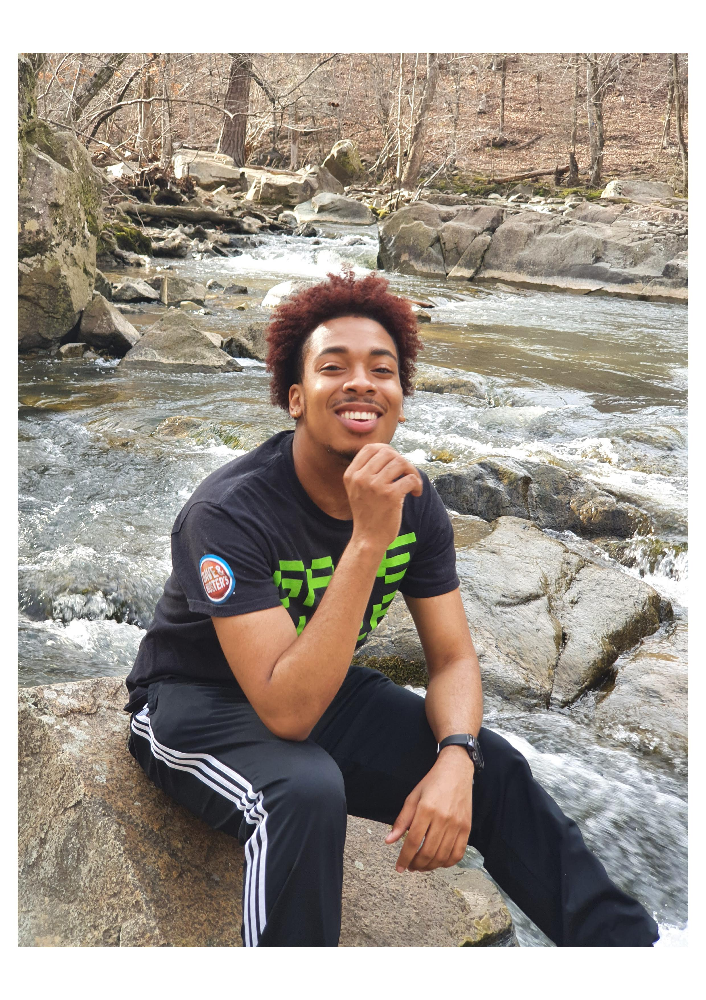

Who is Robert Susewell?
This is the page to learn more about me. I was born and raised in Henderson, North Carolina. My birthday is December 28th and I am 20 years old. My favorite color is Dark Blue while my favortie food is pizza. I love anything realated to new technology.
Click below to find out my two current majors at UNC.